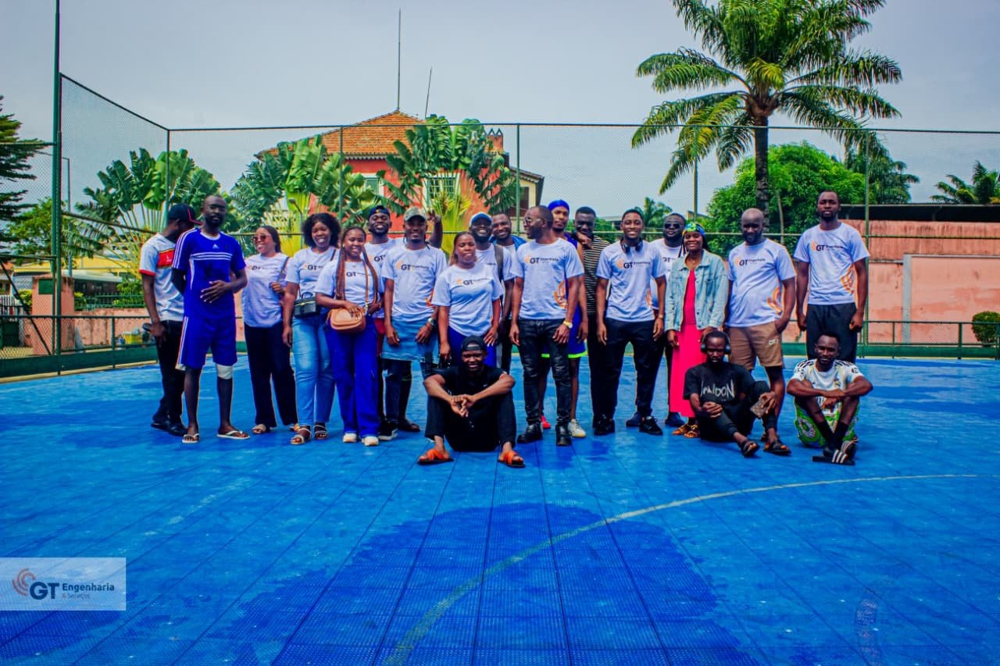

Nossa Gente
Graciano de Jesus – CO

Colaborador

Colaborador

Colaborador

Soluções técnicas integradas em Engenharia, HSE, Tecnologia, Formação e Consultoria Empresarial.
A GT Engenharia e Serviços, SU LDA é uma empresa angolana focada na prestação de soluções integradas em engenharia, HSE, tecnologia, formação e consultoria, atuando em indústrias tecnológicas, óleo e gás, energia e construção civil.
A GT Engenharia promove uma cultura organizacional baseada na excelência operacional, na segurança, na disciplina profissional e na responsabilidade ambiental. Acreditamos que operações eficientes devem ser realizadas com respeito pelas pessoas e pelo meio ambiente, integrando práticas que reduzem impactos ambientais e garantem o cumprimento da legislação ambiental. Atuamos com foco na: • Prevenção da poluição e gestão adequada de resíduos • Controlo de impactos ambientais em projetos industriais e de construção • Promoção de práticas ambientais seguras em óleo & gás e energia • Formação e consciencialização ambiental das equipas Dessa forma, ajudamos os nossos clientes a operar com segurança, conformidade legal e imagem institucional sólida, promovendo crescimento sustentável no longo prazo.
Graciano de Jesus – CO
Colaborador
Colaborador
Colaborador
Envie o seu CV e venha crescer connosco.
Cabinda – Angola
921 630 180
gtengenhariaservicos@gmail.com
NIF: 5002917963
Facebook da GT Engenharia
Ação Social
Ação solidária: Jogo solidário com o Hospital Provincial de Cabinda para angariar bens em apoio ao Orfanato do Caio.
